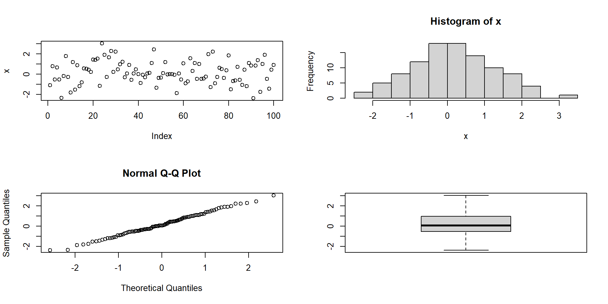

plot(iris)x2-Graphics with R
Angewandte Statistik – Ein Praxiskurs
Thomas Petzoldt
2025-04-04
Preface
The examples were tested with R 4.3.x and R 4.4.2
Data sets of this presentation:
- Some data sets are built-in data in R
- Other data can be downloaded from https://github.com/tpetzoldt/datasets
The `radiation.csv’ data set contains derived data from the German Weather Service (http://www.dwd.de), station Dresden-Klotzsche. Missing data were interpolated.
If a data set is missing, please let me know.
Table of Contents
- The easy way
- Customizing graphics
- Multiple grapics on one page
- Saving and exporting graphics
- Lattice
- grid and gridbase
- ggplot2
Base graphics
The Easy Way

- R contains many graphics functions with convenient defaults.
irisis a built-in data set in R (see next slide)plotis a so-called generic function that automatically decides how to plot.
The iris data set
The famous (Fisher’s or Anderson’s) iris data set contains measurements (in centimeter) of the variables sepal length, sepal width, petal length and petal width of 50 flowers from each of 3 species of iris, Iris setosa, I. versicolor, and I. virginica.
- see
?irisin R’s online help. - or: https://en.wikipedia.org/wiki/Iris_flower_data_set
Plotting colums of a data frame
A column of a data.frame is accessed with $.
The use of with() saves dollars

Colors and plotting symbols in R
R allows to change style and color of plotting symbols:
col: color, can be one of 8 default colors or a user-defined colorpch: plotting character, can be one of 25 symbols or a quoted lettercex: character extension: size of a plotting character
Special plotting symbols
- symbols 21..25 have an optional background color
lwd: border width of the symbol
R as function plotter
- type: “p”: points, “l”: lines, “b”: both, points and lines, “c”: empty points joined by lines, “o”: overplotted points and lines, “s” and “S”: stair steps, “h” histogram-like vertical lines, “n”: no points or lines.
Line styles
lty: line type (“blank”, “solid”, “dashed”, “dotted”, “dotdash”, “longdash”, “twodash”) or a number from 1…7, or a string with up to 8 numbers for drawing and skipping (e.g. “4224”).lwd: line width (a number, defaults to 1)
Coordinate axes and annotations
col=iris$Species: works becauseSpeciesis a factorlas=1: numbers on y-axis upright (try: 0, 1, 2 or 3)log: may be used to transform axes (e.g. log=“x”, log=“y”, log=“xy”)
Adding a legend
mycolors <- c("blue", "red", "cyan")
plot(iris$Sepal.Length, iris$Petal.Length, xlim=c(0, 8), ylim=c(2,8),
col=mycolors[iris$Species], pch = 16,
xlab="Sepal Length (cm)", ylab="Petal Length (cm)", main="Iris Data",
las = 1)
legend("topleft", legend=c("Iris setosa", "Iris versicolor", "Iris virginica"),
col=mycolors, pch=16)
- see
?legendfor more options (e.g. line styles, position of the legend)
Global parameters, font size, margins, …
- Many figure options can be specified globally with
par() par(lwd=2)all lines have double widthpar(mfrow=c(2,2))subdivides the graphics area in 2 x 2 fieldspar(las=1)numbers at y axis uprightpar(mar=c(5, 5, 0.5, 0.5))changes figure margins (bottom, left, top, right)par(cex=2)increase font size- \(\rightarrow\) sometimes it is better to leave font size as is and change size of the figure instead
Read the ?par help page!
Example
- change font size (
cex), margins (mar) and axis label orientation (las) oparstores previuos parameter and allows resetting
Saving and exporting figures
- Easiest way ist to use the RStudio’s Export –> Save as Image (or copy to clipboard)
- Important: Select correct image format and image size!
| Format | Type | Usage | Notes |
|---|---|---|---|
| PNG | bitmap | general purpose | fixed size, use at least 300 pixels per inch |
| JPEG | bitmap | photographs | not good for R images |
| TIFF | bitmap | PNG is easier | outdated, required by some journals |
| BMP | bitmap | not recommended | outdated, needs huge memory |
| Metafile | vector | Windows standard format | easy to use, quality varies |
| SVG | vector | can be edited | allows editing with Inkscape |
| EPS | vector | PDF is easier | required by some journals |
| vector | best quality | perfect for LaTex, RMarkdown and Quarto, MS Office requires conversion |
Vector vs. Bitmap Graphics
Bitmap formats
- jpg, png, tiff
- fixed resolution, cannot be magnified without loss
- retouching possible, but not editing
- well suited for pictures or plots with huge number of data (color maps)
- cannot be converted to vector without complications and quality loss
Vector formats
- svg, pdf, [wmf, emf]
- can be up- and downscaled and edited
- well suited drawings and diagrams (except if huge amount of data)
- can always be converted to bitmap
Writing figures directly to PDF
- width and height in inch (1 inch = 2.54cm)
- professional quality, size can be changed without quality loss
- conversion to PNG can be done later with free programs
\(\rightarrow\) Inkscape, SumatraPDF, ImageMagick
Writing figures directly to PNG
- width and height given in pixels
- Hint: play with
resto change nominal resolution and font size - use at least 300 dpi (dots per inch, i.e. number of pixels = 300/2.54 * width in cm)
- professionals use 600 or even 1200 pixels per inch, but then .docx and .pptx files will dramatically increase
- 1600 x 1200px is good for 13.3 x 10 cm size in the printed document
Font size of ggplot figures
- Appearance and font sizes of ggplot figures can be controlled with themes.
- It makes sense to create a theme separately and then add it with “+”.
library(ggplot2)
data(iris)
# define a theme with user-specified font sizes
figure_theme <- theme(
axis.text = element_text(size = 12),
axis.title = element_text(size = 12, face = "bold"),
legend.title = element_text(size = 12, face = "bold"),
legend.text = element_text(size = 12))
# ggplots can be stored in a variable
p <- iris |>
ggplot(aes(Petal.Length, Petal.Width, colour = Species)) +
geom_point() + figure_themePrint to a file:
Print to the screen:
More about themes can be found in the books of Chang (2024) and Wickham et al. (in press).
Some notes About Date and Time
Example: Solar Radiation Data in Dresden
Note: The data set contains derived data from the German Weather Service (http://www.dwd.de), station Dresden. Missing data were interpolated.
Date and time classes in R
- Most important classes
as.Date(dates only)as.POSIXct(date and time)
formatandstrptime- extract day, month, year, Julian day
- time series objects
tseriesandzoo
format and strptime
| %Y | year with century |
| %m | month as decimal number |
| %d | day of the month |
| %H | hours as decimal number (00-23) |
| %M | minute as decimal number (00-59) |
| %S | second as decimal number (00-59) |
| %j | day of year (001-366) |
| %u | weekday, Monday is 1 |
Date conversion for the solar radiation data set
radiation$year <- format(radiation$Date, "%Y")
radiation$month <- format(radiation$Date, "%m")
radiation$doy <- format(radiation$Date, "%j")
radiation$weekday <- format(radiation$Date, "%u")
head(radiation) date rad interpolated Date year month doy weekday
1 1981-01-01 197 0 1981-01-01 1981 01 001 4
2 1981-01-02 89 0 1981-01-02 1981 01 002 5
3 1981-01-03 49 0 1981-01-03 1981 01 003 6
4 1981-01-04 111 0 1981-01-04 1981 01 004 7
5 1981-01-05 161 0 1981-01-05 1981 01 005 1
6 1981-01-06 55 0 1981-01-06 1981 01 006 2- The lubridate package has date and time functions that are easier to use.
Summarize data with aggregate
Syntax
Example
- aggregate is essentially a wrapper to
apply
Plot aggregated radiation data
Most functions that support a formula argument (containing ~) allow to specify the data frame with a data argument.
More about Plotting
Different plotting packages with different philosophies
- base graphics
- package lattice
- package ggplot2
- Manipulation of plots
- set size and fonts; save plots to disk
- use pdf, svg or png – not jpg - except for photographs
- Related software
- edit/convert svg (and pdf) with Inkscape
- convert images with ImageMagick
Base Graphics
grid and gridBase
- complete freedom to organise plotting area
- interface relatively raw
- basis of other plotting packages
Lattice Graphics
- Implements “trellis graphics” (i.e. gridded graphics) in R
- Sarkar, D. (2008). Lattice: multivariate data visualization with R. Springer Science & Business Media.
ggplot2
- Implements the “Grammar of Graphics”
- Leland Wilkinson (2005) The Grammar of Graphics. 2nd edn. Springer
- Hadley Wickham (2009, 2016) ggplot2: Elegant Graphics for Data Analysis. Springer.
- very popular, part of the tidyverse family of packages
- https://ggplot2.tidyverse.org/
ggplot-Example
Pipelines and faceting in ggplot2
Further Reading
More presentations
Books
- Chang, W. (2024) R Graphics Cookbook. O’Reilly.
- Wickham, H. Navarro, D. and Pedersen, T.L. (in press) ggplot2: Elegant Graphics for Data Analysis
Manuals
More details in the official R manuals, especially in An Introduction to R
Videos
Many videos can be found on Youtube, at the Posit webpage and somewhere else.
This tutorial was made with Quarto
Contact
Author: tpetzoldt +++ Homepage +++ Github page